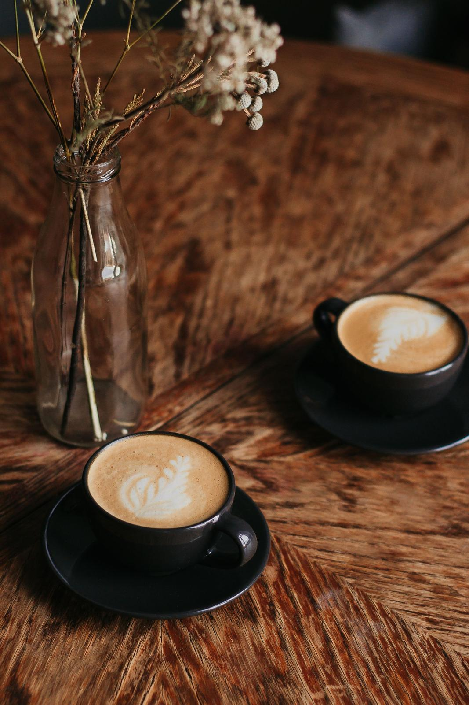

Contact
Say hello
The best way to reach us is to pop in or call.
- Call01632 960123During opening hours.
- Emailhello@silk.exampleEvents, wholesale and anything not urgent.
- Visit14 Sample Street, AnytownMon – Fri 8am – 4pm · Sat 8:30am – 4pm · Sun 9am – 3pm
- Instagram@silk.coffeePlaceholder handle. Link goes here once the account is confirmed.

All contact details are placeholders. The number is from Ofcom's range reserved for fiction and the email uses a reserved example domain.